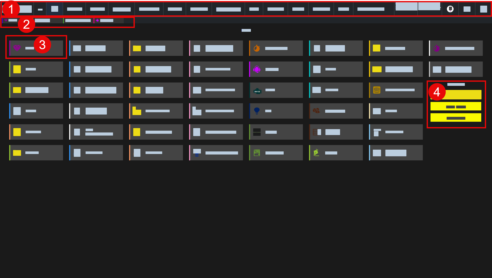

Desktop
Einordnung
X-ERP Hilfe > Grundlagen > Desktop
Der Desktop ist der zentrale Arbeitsbereich von X-ERP. Er verbindet Navigation, Rollen-Arbeitsbereich, direkte Funktionsaufrufe und optionale Notizen auf einer gemeinsamen Startseite. So sieht jeder Benutzer genau die Bereiche, die zu seiner Rolle und zu seinen täglichen Aufgaben passen.

1) Desktop-Menü
Das Desktop-Menü liegt am oberen Rand und dient als feste Orientierung in X-ERP. Links erreichen Sie Startseite, Navigation und zentrale Programmbereiche. Rechts finden Sie unter anderem Informationen zur aktuellen Firmendatenbank, zur Sprache, zu Systeminformationen und zum angemeldeten Benutzer. Nicht benötigte Menüpunkte können rollenbezogen ausgeblendet werden.
2) Rollen-Menü
Das Rollen-Menü wird passend zur Benutzerrolle angezeigt und führt zu den wichtigsten Arbeitsbereichen dieser Rolle. Es kann pro Rolle und Rollen-Desktop eingerichtet werden. Dadurch bleiben häufig benötigte Assistenten, Listen und Bearbeitungsansichten schnell erreichbar, ohne dass der Benutzer durch fachfremde Menüs navigieren muss.
3) Desktop-Button
Desktop-Buttons sind die direkten Einstiegspunkte im Arbeitsbereich. Sie öffnen zum Beispiel Listen, Bearbeitungsansichten, Assistenten oder Auswertungen. Die Buttons können rollenbezogen zusammengestellt werden, damit jeder Benutzer mit wenigen Klicks zu seinen wichtigsten Aufgaben gelangt.
4) Elektronische Haftnotizen
Elektronische Haftnotizen erfassen kurze Hinweise, Ideen oder Aufgaben direkt auf dem Desktop. Eine Haftnotiz kann aktiviert oder deaktiviert werden. Deaktivierte Haftnotizen werden beim nächsten Aktualisieren ausgeblendet und stören dadurch nicht dauerhaft den Arbeitsbereich.